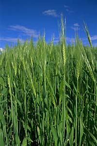
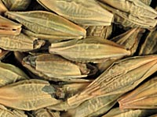
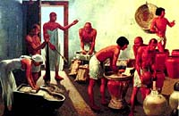
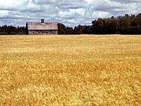
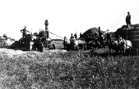
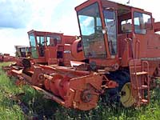
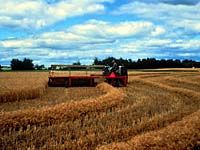
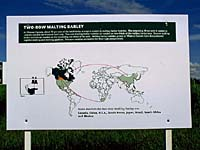

Barley (and oats) have a long tradition among Old World farmers.
At one time, barley and oat crops possibly were the most important cereal crops on earth.
The use of barley for the production of malt and for brewing has been a well-established tradition.
|
Barley is a cereal grain, and therefore belongs to the:
- grass family Gramineae (Poaceae).
- tribe Triticeae
- genus Hordeum.
|
|

The main taxonomic description of Hordeum is it's one-flowered spikelet.
Three spikelets alternate on opposite sides of the flat rachis of the spike (head).
This forms a triplet of spikelets on each node - the central and two laterals.
Each spikelet is subtended by two glumes.
When all three spikelets are fertile, it is considered six-rowed barley, when
only the central spikelet is fertile it is considered two-rowed.
|
Barley has been associated with the earliest beginnings of agriculture in the Near East.
The most likely origin of cultivated barley is from a wild ancestor growing in the fertile crescent 35000-40000 years ago. This ancestor may have developed into the present two-row wild-type weed barley (Hordeum vulgare sp. spontaneum) as well as the cultivated H. vulgare two and six-row types.
|
|

The oldest barley samples were found in the Near East (17000 BP. Wendorf et al 1979),
from there it is thought that barley cultures spread to Europe, west Asia, and the Nile valley.
|
There is now evidence that barley was under cultivation in India and China
considerably later than in the Middle East. Historically and today, barley was and is an important crop,
associated with the production of beer, and as a human food and animal feed crop.
|
|

Why is barley produced?
Barley has many advantages which have caused it to become one of the most
important cereal crops in the world. Barley is hardy and easy to grow,
flourishing in many different soils and climates. The grain is fairly easy to handle,
store and transport.
|

Where is it produced?
Around the world, 78 500 000 hectares are used for growing
175 400 000 tonnes of barley annually. The highest commercial
yields for barley tend to come from central and northern Europe.
|

In terms of global barley production, Canada ranks second, producing 7-8% of world's barley
(next to Russia which produces a huge 29-30% of the world market - 50 million tonnes per year).
|

Barley grows well in similar temperature conditions to wheat, but, unlike wheat,
barley has a greater tolerance of frost, drought, and saline soils, as well as requiring
fewer days to mature (90 to 94 FFD vs 97 to 102 FFD). Barley is planted in the same areas
as wheat, but due to it's extra hardiness, it can be planted farther north.
|
Barley is the grain of choice if a marginal area has a later spring or if planting
is delayed due to wet weather since it has a short growing season. Other good points
about barley are it's ability to germinate rapidly, smothering weeds, as well as early
harvesting which allow it to be harvested before many weeds scatter their seeds.
A limitation of barley is it's poor adaptation to wet and acidic soil conditions.
|
|
How much do we produce?
Barley is the number three crop in Saskatchewan. Almost 1.5 million hectares is
planted to barley by Saskatchewan farmers.
|
What does it look like when I use it?
Barley varieties have three main uses;
- Production of malt (largely for the brewing industry, sometimes as food malts
for syrups, candy, and other flavorings).
- Human food - used in production of flatbreads, baby foods, gluten-free products,
in soups or as a rice imitation.
- Animal feed
|
|

How is it processed?
Barley is processed similarly to wheat and other cereals. This high-energy cereal
is processed by removing the fibrous outer hull, bran and germ.
The high starch levels in the seeds makes barley a good source of energy.
Demand for Canadian barley has been growing throughout the world.
|